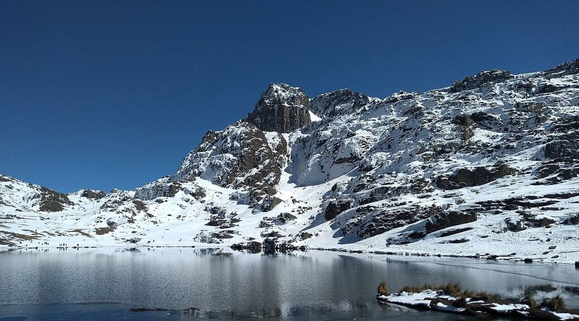
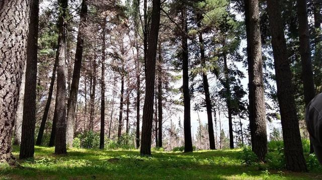
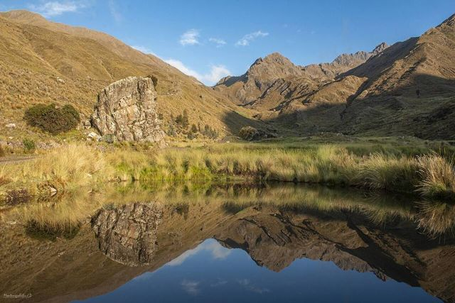
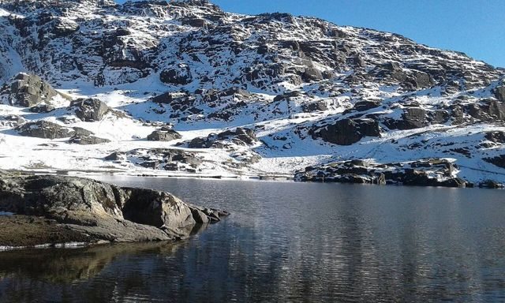
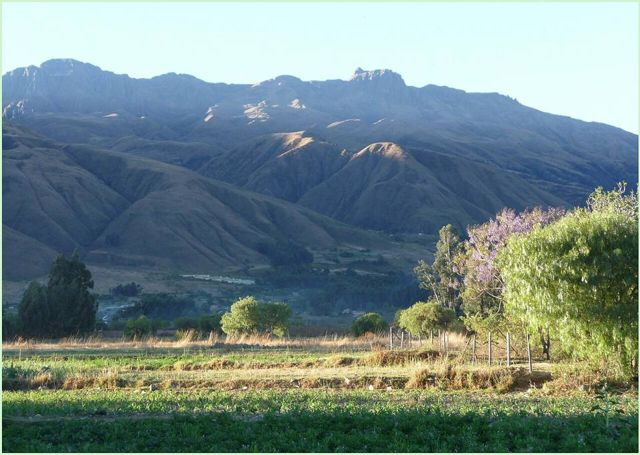
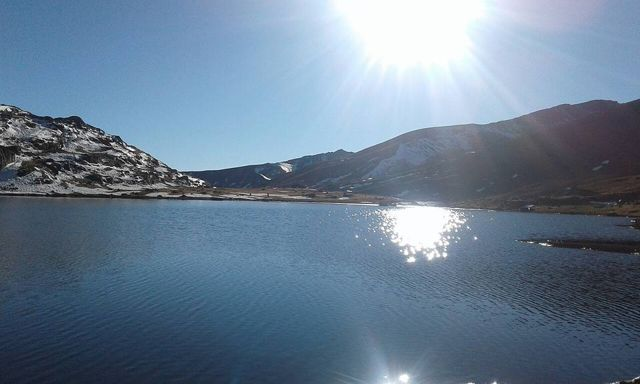

Parc national Tunari
Département de Cochabamba · Nature et randonnée

Juste au-dessus de la ville, la cordillère du Tunari grimpe à plus de 5 000 m. En une journée, on passe des eucalyptus de la vallée à des lagunes d'altitude entourées de lamas, avec toute la vallée de Cochabamba à ses pieds. Une belle première randonnée pour tester ses jambes en altitude.
4 200 maltitude
1 joursur place
Haute altitude. Au-dessus de 3 500 m, le mal des montagnes (soroche) est fréquent. Arrivez progressivement, buvez beaucoup et ralentissez le premier jour.
À faire
- Randonnée aux lagunes (Laguna Wara Wara, Lagunas de Tunari)
- Ascension du Cerro Tunari pour les plus motivés (journée longue)
- Vue sur toute la vallée de Cochabamba
À goûter
- SilpanchoFine escalope de bœuf panée, sur du riz et des pommes de terre, avec un œuf au plat et une salade de tomates et d'oignons. LE plat de Cochabamba.
- Soupe de quinoaSoupe chaude de quinoa et légumes, servie dans les refuges et les comedores d'altitude. Parfaite quand il fait froid.
Conseil. Excursion à la journée depuis Cochabamba, mieux avec un guide ou un véhicule 4x4. Bon test d'acclimatation.
Comment aller à Parc Tunari
Cochabamba Route (bus, voiture) · 1 à 2 h
Taxi 4x4 ou excursion guidée. Les pistes montent directement au nord de la ville.
Photos de Parc national Tunari










Autres lieux de la région
 CochabambaLa « ville de l'éternel printemps » et capitale gastronomique du pays.
CochabambaLa « ville de l'éternel printemps » et capitale gastronomique du pays. Laguna AlalayUne grande lagune au cœur de Cochabamba, refuge d'oiseaux au pied des collines.
Laguna AlalayUne grande lagune au cœur de Cochabamba, refuge d'oiseaux au pied des collines. Valle Alto : Tarata et ClizaVillages coloniaux de la vallée, marchés et chicha.
Valle Alto : Tarata et ClizaVillages coloniaux de la vallée, marchés et chicha. Quillacollo et Inca RakayRuines incas perchées au-dessus de Sipe Sipe, et Quillacollo, ville de l'Urkupiña.
Quillacollo et Inca RakayRuines incas perchées au-dessus de Sipe Sipe, et Quillacollo, ville de l'Urkupiña. Parc national TorotoroEmpreintes de dinosaures, canyon spectaculaire et grotte d'Umajalanta. Un incontournable depuis Cochabamba.
Parc national TorotoroEmpreintes de dinosaures, canyon spectaculaire et grotte d'Umajalanta. Un incontournable depuis Cochabamba. IncallajtaLe plus grand site inca de Bolivie, dans une vallée isolée.
IncallajtaLe plus grand site inca de Bolivie, dans une vallée isolée. TotoraPetit village colonial très bien conservé sur l'ancienne route vers Santa Cruz.
TotoraPetit village colonial très bien conservé sur l'ancienne route vers Santa Cruz. AiquileLa capitale nationale du charango, à mi-chemin entre Cochabamba et Sucre.
AiquileLa capitale nationale du charango, à mi-chemin entre Cochabamba et Sucre. MizqueVillage colonial d'une vallée chaude, terre de l'ara à front rouge.
MizqueVillage colonial d'une vallée chaude, terre de l'ara à front rouge.